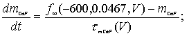
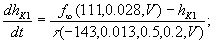
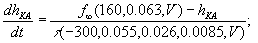
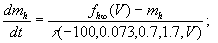
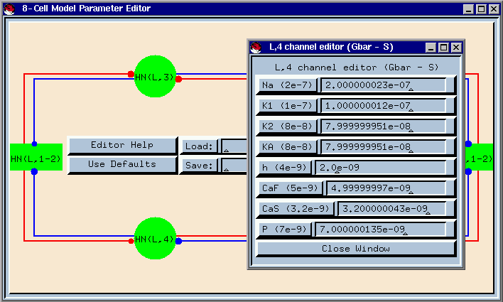

A Tutorial of the Leech Heart Interneuron 8-Cell Model
Andrew Hill, Steve Van Hooser, and Ron Calabrese
{ahill,vanhoosr,rcalabre}@biology.emory.edu
(Model by Andrew Hill,
Tutorial by Steve Van Hooser)
Table of contents:
-
The Leech Heart Interneuron
Circuit
-
An Eight Cell
Model of the Beat Timing Circuit
-
Questions and Experiments
-
Appendix: Quick
GENESIS User Interface Tips
-
References
The Leech Heart Interneuron
Circuit
In the medicinal leech, blood is propelled through the circulatory system
by the rhythmic constrictions of two lateral heart tubes. The timing and
coordination of these constrictions are controlled by a central pattern
generator (Calabrese et al. 1995). This pattern generator comprises a network
of seven bilateral pairs of segmental heart (HN) interneurons. The CPG
produces rhythmic activity (at about 0.1 Hz) that paces segmental heart
motor neurons, which in turn drive the two hearts. The synaptic connections
among the interneurons and from the interneurons to the motor neurons are
inhibitory (Figure 2). The first four pairs of heart interneurons control
the timing of the network.
Figure 1: The 21 ganglia of the leech nervous
system. (From From Neuron to Brain, used with permission.)

Figure 2: A) shows the functional anatomy
of the beat timing circuit. Circles represent cell bodies and synaptic
input sites, lines represents axons and processes, and squares represent
specializations of the axons for spike initiation and synaptic input.
HN cells are indexed by body side and ganglion number. HN1 and HN2
cells send axons down to G3 and G4, and make reciprocal inhibitory connections
with HN cells on the same side in each ganglion. Each HN3 and HN4
cell makes a reciprocal spike-mediated and graded synaptic connection with
its contralateral homologue. In addition, each HN3 cell sends an
axon down to G4, and makes reciprocal inhibitory connections with the HN1
and HN2 cells on the same side. Red and yellow indicate the approximate
activity phase of each cell, with red corresponding to ~0 degrees, and
yellow to ~180 degrees. As described in the text, only the connections
in G4 are modeled. B) shows the schematic of the modeled circuit.
Since HN1 cell process in G4 fires in-phase with the ipsilateral HN2 process,
and since the two cells make identical synaptic connections, they lumped
together. Note that each HN1-2 synapse represents two synaptic connections,
one for the HN1 cell and one for the HN2 cell. The synapses connecting
the bilateral HN3 and HN4 cells also represent two connections, one spike-medated
and the other graded.
The timing oscillation is dominated by the activity of the third and
fourth pairs of heart interneurons. Reciprocally inhibitory synapses between
these bilateral pairs of oscillator interneurons, combined with their ability
to escape from inhibition and begin firing, pace the oscillation (Figure
3A). Each of these two reciprocally inhibitory heart interneuron pairs
can be considered an elemental half-center oscillator. Activity within
an elemental oscillator consists of alternating bursts of action potentials
and quiescent intervals when the neuron is inhibited by its contralateral
homologue (Figure 3A). These neurons are thus termed oscillator interneurons.
The first two pairs of heart interneurons act as coordinating interneurons,
serving to link these two elemental oscillators. Their pattern of synaptic
connections with the oscillator interneurons is illustrated in Figure 2
along with their rather unusual functional anatomy. These neurons initiate
spikes and receive synaptic inputs and make their synaptic outputs not
in their ganglion of origin but in ganglion 3 and 4. Under most circumstances
their primary site of spike initiation is in ganglion 4 where they receive
synaptic input from both ipsilateral HN(3) and HN(4) oscillator neurons.
For the purpose of modeling this synaptic diagram was simplified to reflect
the dominance of the G4 initiation sites of the coordinating interneurons
as shown in the inset of Figure 2. Activity in the entire timing network
is illustrated in the extracellular recordings of Figure 3B. Note that
the activity of the oscillator neurons on the same side is coordinated
with a small fixed phase difference and that the coordinating neurons fire
during the interval where both the oscillator neurons on the same side
are quiescent (i.e. they are being inhibited by their contralateral homologues
respectively).
Figure 3: A shows a simultaneous intracellular
recording of the elemental oscillator in G3. B shows extracellular
recordings from three HN cells. The median spike of each burst is
marked by a dot. Note that cells L,3 and L, 4 fire approximately
in-phase, and that both of these cells fire approximately 180 degrees out
of phase with cell L,2. There is a small phase difference between
the bursts of cell L,3 and L,4: the phase difference is defined to be the
delay divided by the cycle period.
Several ionic currents have been identified in single electrode voltage-clamp
studies that contribute to the activity of oscillator heart interneurons
(Calabrese et al. 1995). These include, in addition to the fast Na+
current that mediates spikes, two low-threshold Ca2+ currents
[one rapidly inactivating (ICaF) and one slowly inactivating
(ICaS)], three outward currents [a fast transient K+
current (IA) and two delayed rectifier-like K+ currents,
one inactivating (IK1), and one persistent (IK2)],
a hyperpolarization-activated inward current (Ih) (mixed Na+/K+,
Erev=-0.020 V), a low-threshold persistent Na+ current
(IP) and a leakage current (Il). The inhibition between
oscillator interneurons consists of a graded component that is associated
with the low-threshold Ca2+ currents and a spike-mediated component
that appears to be mediated by a high-threshold Ca2+ current.
Spike-mediated transmission varies in amplitude throughout a burst according
to the baseline level of depolarization (Olsen and Calabrese 1996). Graded
transmission wanes during a burst owing to the inactivation of low-threshold
Ca2+ currents. Blockade of synaptic transmission with bicuculline
leads to tonic activity in oscillator heart interneurons (Schmidt and Calabrese
1992) and Cs+, which specifically blocks Ih, leads
to tonic activity or sporadic bursting (Angstadt and Calabrese 1989).
Much of this biophysical data has been incorporated into a detailed
conductance-based model of an elemental (two-cell) oscillator (Nadim et
al. 1995). The current generation of this model is implemented in this
GENESIS (Bower and Beeman 1998) tutorial. The model cells consist of a
single isopotential compartment and use standard Hodgkin-Huxley representations
of each voltage-gated current. Synaptic transmission in the model is complex.
A spike-triggered alpha-function is used to describe the postsynaptic conductance
associated each action potential ,and the maximal conductance reached is
a function of the past membrane potential to reflect the fact that spike-mediated
transmission varies in amplitude throughout a burst according to the baseline
level of depolarization. Graded synaptic transmission is represented by
a synaptic transfer function, which relates postsynaptic conductance (the
result of transmitter release) to presynaptic Ca2+ build-up
and decline, via low-threshold Ca2+ currents and a Ca2+
removal mechanism respectively. The model is now in it third generation,
having been upgraded each time by the incorporation of new data from experiments
suggested by the previous generation of model (Olsen and Calabrese 1996).
Free parameters in the model are the maximal conductance
for each current (voltage-gated or synaptic). In the default or canonical
version of the model presented here, the 's
were adjusted to be close to the average observed experimentally and to
produce and appropriate firing frequency during the burst phase of oscillation.
The reversal potential, Eion, for each current was determined
experimentally and they were considered fixed. Final selection of parameters
to form a canonical model was dictated by model behavior under control
conditions, passive response of the model to hyperpolarizing current pulses,
and reaction of the model to current perturbations. The model cells were
also required to fire tonically when all inhibition between them was blocked,
as do the biological neurons (Schmidt and Calabrese 1992).
Much less is known about the intrinsic membrane properties of the coordinating
neurons; because their unusual functional morphology prevents voltage clamp
analysis from the soma. To construct the timing network model presented
here the coordinating neuron were modeled similarly to the oscillator neurons
except that they have a restricted set of voltage-gated currents. These
currents ('s) were adjusted so
that the neurons fire tonically at the experimentally observed frequency,
whenever they are not inhibited by an oscillator neuron; when they are
inhibited they are completely silent.
An Eight Cell
Model of the Beat Timing Circuit
The equation expressing an oscillator neuron's membrane voltage is
,
where C is the total membrane capacitance (0.5 nF), Iion
is the ionic current for each channel, ISynG is graded
synaptic current, ISynS is spike-mediated synaptic current,
and Iinject is injected current. Note that by convention
inward ionic currents are negative and the injected current has the opposite
sign. The equations for each ionic channel are the following:
,
where is
the maximal conductance, and m and
h are Hodkin-Huxley-style
(see Hodgkin and Huxley 1952) activation and inactivation variables, respectively,
which are raised by the integer values shown above. Eionrepresents
the reversal potential for each channel:
ENa = 0.045V,
EK1,K2,KA
= -0.070V,
ECaF,CaS
= 0.135V, Eh
=-0.021V,
and
El = -0.060V. The activation/inactivation variables
follow voltage- and time-dependent kinetics described by the following
equations:




,
where and .
The h current has a special steady state activation function ,
and CaF and Na each have special time constant functions:  and .
and .
The steady-state activation/inactivation values and time-constant values
for all of the channels are shown graphically in Figure 5.
The actual value of the maximal conductance for each channel was taken
to be a free parameter in the model, and was chosen so as to reproduce
the frequency of oscillation typically observed in the animal. For
the G3 and G4 cells,  , , , , ,
, , , , ,  , , ,
(all
values are in nS).
, , ,
(all
values are in nS).
The model cells representing the coordinating fibers are similar to
those representing the oscillator neurons, except that the coordinating
fibers have a higher leak reversal potential and only have three channels:
Na, K1, and K2. For the G1 cells, , , , ,
and the G2 cells are identical except that
(all values in nS).
El= -0.040V for all of these cells.
Figure 5: Screen shots of the channel steady
state activations and time constants as viewed in Neurokit. Two tau
panels are shown for K1 (the delayed rectifier) and CaS (slow calcium)
because the activation and inactivation values cannot be shown on the same
scale. Note that the activation time course for the Na (fast sodium)
is voltage indepdent--it has a constant value of 1.0e-04 seconds.
The equations describing the spike-mediated synapse and the graded synapse
are given in Figure 6. ESyn = -0.0625V. The
maximal synaptic conductances, like the maximal ionic channel conductances,
are taken as free parameters and are chosen so as to fit the data.
The values used in the regular model are the following: , , ,
and
(all units in nS).
Questions and Experiments
The 8-cell model allows one to investigate several questions central to
understanding how the structure of the circuit and the properties of its
cells interact to produce its behavior. This section walks the reader
through some basic experiments. For papers on studies of these questions
using modeling, see Olsen et al. (1995) and Nadim et al. (1995).
What is the relationship between the activity of a single HN cell and its
ion channels' conductances?
If one isolates one of the HN cells in G3 or G4, it fires tonically.
How do the maximal conductances of the ion channels in a cell affect this
activity? One can perform some simple experiments to study this relationship.
Experiment 1: The relationship between ion channel conductances
and single cell activity
-
First, isolate the left cell in G4 by selecting "Disable Cells and Synapses"
from the "Experiments" section in the tutorial. Turn off all synapses
leading into or away from cell L,4, and disable every other cell to speed
up the simulation. Clicking on a cell or synapse will alternatively
disable and enable it--cells turn dark gray when disabled, while synapses
turn white. The window should look like the following:
Close the window to make room for other windows on the screen.
-
Click on the "Show Left Vm's" button to show the voltage traces for all
of the cells on the left side. Click "Run" to run the model for 20
seconds. The voltage output should look like the following:
On a sheet of paper, write down observations about the activity of the
cell. Zoom in (click here to find out how)
on a 5 second interval, count the number of action potentials to get an
idea of the firing rate (should be ~7.5Hz), take note of the height of
a typical action potential, and write down anything else interesting.
-
Next, observe the cell's response to injected current. Click "reset"
to reset the simulation, and open the "Current Injection" panel.
Enter "-0.10e-09" to inject -0.10nA of current into the cell, and press
return (for help with text fields, click here).
Click "run" to run the simulation. What happens? What is the
shape of the voltage trace? Adjust the scale of the graph if necessary
to see the entire trace.
Now reset and run the simulation again, but this time use "-0.06e-09".
What happens?
-
To discover how ion channels affect the cell's activity, it is useful to
change the value of the maximal conductance for a channel and see how the
activity changes. Make sure the current injection has been set to
0. Click on "Parameter Editor" to edit the model parameters, and
then click on "L,4" to edit the parameters for cell L,4. Change the
value of the P conductance from its default value of 7e-09 to 8e-09 as
shown:
Be sure to hit return or click the label "P" after editing the value
so the change will take effect. Reset the simulation, and run it
for 20 seconds. What is different? What is the firing rate?
Has the height of the action potential changed?
-
Return the P value back to its default value (the default value is given
in parentheses). Repeat the above experiment, except use the Na channel
and change it to half its value. How is the system different?
Now return the Na current to its default value, and set the h current to
0. Repeat the injection experiments. What does the voltage
curve look like now?
-
Now, return the h current maximal conductance to its default value of 4e-9
S. Click on the "Show Ih, ICa, IP" button to look at the current
flowing through each of these channels. Repeat the injection experiment
above, and observe the current flowing through each of the channels.
Compare the observed h current to the graph of the steady-state activation
and time-constant for the h current.
-
Explore the other ion channels. Interesting things to try include
removing the calcium currents and repeating the injection experiments,
doubling the slow calcium current while injecting -0.08e-9A, and reducing
the K1 current.
Why do two coupled HN cells oscillate?
An isolated HN cell pair in G3 or G4 constitutes an elemental oscillator
in the model as it does presumably in the biological system (Figure 3A).
What mechanisms produce these oscillations? One can try changing
parameters in the model to see which ones have a strong effect on the nature
of the oscillation.
Experiment 2: The relationship between intrinsic currents and
two cell oscillations
-
To isolate a reciprocally inhibitory cell pair, use the "Disable Cells
and Synapses" feature to disable all cells in the circuit and the connections
between them except for cells L,4 and R,4. When finished,
the window should look somewhat like the following:
Close this window after the disabling the cells to reduce window clutter.
-
Run the model to see how these cells behave under the default parameters.
First, click on the "Show Left Vm's" and "Show Right Vm's" buttons to display
the graphs of the intracellular voltage in the cells. Run the model
for 20 seconds, and observe the voltage traces. The left and right
HN4 traces should look like the following:
Click "Show L,4 INa, IK" to show the fast sodium and potassium currents.
Click "Show L,4 Ih,ICa,IP to show the h, calcium, and P currents.
Observe how these currents change as the neurons go through the oscillation.
Click "Show R,4->L,4 currents" and "Show L,1-2->L,4 currents" to view the
synaptic currents. Next, reset and run the model for 100 seconds
by changing "Time" to 100, pressing enter, and then clicking "Run".
The graphs for cells L,4 and R,4 will display their voltages as the model
runs. Click "Autoscale" on the graphs during the run so the time
access will be from 0 to 100s. Count the number of oscillations during
this time--it should be 10. Also, try to determine the spike rate
during the bursts of action potentials and the number of spikes fired in
a typical burst.
-
Investigate what affect the h current has on the oscillation. Reduce
the h current by half by setting its conductance to 2e-09. To do
this, click on the "Parameter Editor" button and then on the circles labeled
L,4 and R,4. Change the value of the h conductance to 2e-09 in both
windows.

Be sure to hit return or click the label so the change takes effect.
Close the R,4 and L,4 windows to reduce window clutter. Before clicking
"reset" and "run" to run the model again, predict how the oscillation will
be changed based on the current observed under the default parameters and
the results of the current injection in Experiment 1. Was the prediction
correct? What effect does the h current have on the oscillation?
Try to write down not only what effect the h current has, but why
it has that effect.
-
Next, try increasing the P channel conductance in both L,4 and R,4 from
its normal value. Change the value of the P conductance from its
default value of 7e-09 to 8e-09 in both L,4 and R,4. Close the L,4
and R,4 windows to reduce window clutter. Again predict how the behavior
will be changed based on knowledge from Experiment 1 and the observations
of the ionic current above. Run the model. How does this run
differ from the previous one? Was the prediction accurate?
Try increasing the value of the P conductance further to 10e-09.
How does the behavior change? Try to write down in words what effect
P has on the oscillation.
-
Finally, investigate the affect of the synaptic weights on the oscillation.
Click on "Show Weights" in the "Parameter Editor", and edit the value
of the spike mediated synapses between L,4 and R,4 to be 4e-09 (the default
value is 6e-09). Run the model again. What is the period of
oscillation now?
-
Compare the contributions of the spike-mediated synapse to the graded synapse
both modifying the synaptic strengths and by observing the normal current
flow.
For a detailed analysis of this elemental oscillator model, see Nadim et
al. (1995) and Olsen et al. (1995).
Putting it all together: The eight cell pattern generator
How does the full beat timing circuit behave? How is this behavior
influenced by the properties of its parts? The eight cell model allows
questions of this type to be investigated. One such question is the
following: if the two oscillators in G3 and G4 have different intrinsic
periods, what is the period of the entire network? Is it equal to
that of one oscillator, or some combination of the two? How can phase
differences between the elemental oscillators arise? Experiment 3
explores this question in detail.
Experiment 3: The relationship between the period of the circuit
and the periods of its G3 and G4 components
-
In this experiment, the reader will change the period of the G4 oscillator
by altering its intrinsic currents, and observe what effect this change
has on the entire network. First, however, the reader should see
how the circuit behaves under normal conditions. Run the model for
100 seconds, counting the number of oscillations and noting any phase difference
between the cells in G3 and G4. Compare the number of oscillations
to that of the isolated G4 cells in Experiment 2 above.
-
Now isolate the G4 oscillator by disabling cells 3L and 3R and the synapses
between G1,2 and G3. Following the procedure above, reduce the h
current in cells L,4 and R,4 to 2.6e-09. Run the simulation for 100
seconds, and count the number of oscillations. Repeat for h = 4.0e-09
(the default conductance), and for h = 5.4e-09. Write down the number
of oscillations in each case.
-
Next, re-enable the cells in G3 and the disabled synapses. Again,
set the h current in both L,4 and R,4 to 2.6e-09, and run the simulation
for 100 sec. What is the period of oscillation? Has the phase
difference between the cells in G3 and G4 changed? Repeat for h =
5.4e-09. What is the period of oscillation now? Describe the
phase difference in this case. Is the period of the network equal
to one of the intrinsic oscillators, or some combination?
-
Repeat the experiment, except use small changes (in the 0.1e-9 S range)
to the P current to change the intrinsic frequency of the G4 oscillator.
Do the same results hold?
-
Try to determine the period range over which the G4 oscillator can coordinate
the cells in G3. That is, make changes to the P or h current to adjust
the intrinsic period of the G4 oscillator, and see over what period range
G4 will coordinate G3. Can this range be extended by strengthening
or weaking the synaptic connections from the coordinating fibers to the
G4 cells?
Appendix:
Quick GENESIS User Interface Tips
While much of the user interface for this tutorial should be straightforward,
there are a few properties of the GENESIS user interface objects that are
useful to know yet not obvious.
First, many X11 window managers give the user the option to close a
window by clicking an "x" in the upper right corner of the window or a
square in the upper left corner. GENESIS is not equipped to deal
with these messages, so closing a window in this manner will cause the
entire program to quit. Every closeable window in this tutorial has
a "Close Window" or "close" button that should be used instead. Remember
the following figure:
Second, after editing a text field, one needs
to either hit return or click the label of the text field to register the
change. Sometimes the keys do not register, so it is a good idea
to hit return a couple of times instead of just once. If one clicks
the button, watch for it to change color as the mouse button is pressed
and released to ensure a good hit.
Finally, one can adjust the scale on graphs
in GENESIS graphically by clicking on either the first or last label on
an axis, and dragging it to a new location. For example, to change
the scale for one of the Vm graphs to be from 0.010V ... -0.060V to 0.010mV
... -0.030mV, click on the label "-0.060" and drag up to the location of
-0.030 on the axis. Then, release the mouse and the graph will redraw
itself with the new scale. To move it back, grab the "-0.030" label,
drag it off the graph until the label reads -0.060, and release the mouse.
References
Angstadt, J.D. and Calabrese, R.L. (1989) "A hyperpolarization-activated
inward current in heart interneurons of the medicinal leech", J. Neurosci.
9: 2846-2857.
Angstadt, J.D. and Calabrese, R.L. (1991) "Calcium currents and graded
synaptic transmission between heart interneurons of the leech", J. Neurosci.
11: 746-759.
Bower, J.M., and Beeman, D. (1998) The book of GENESIS: Exploring
realistic neural models with the GEneral NEural SImulation System,
Springer-Verlag, New York.
Hodkin, A. and Huxley, A. (1952) "A quantitative description of membrane
current and its application to conduction and excitation in nerve", J.
Physiol. (London) 117:500-544.
Kuffler, S.W., and Nicholls, J.G. (1976) From Neuron to Brain,
Sinauer Associates, Inc., Sunderland, Massachusetts.
Nadim, F., Olsen, Ø.H., DeSchutter, E. and Calabrese, R.L. (1995)
"Modeling the Leech Heartbeat Elemental Oscillator: I. Interactions of
Intrinsic and Synaptic Currents", J. Computational Neuroscience,
2, 215-235.
Nadim, F., and Calabrese, R.L. (1997) "A Slow Outward Current
Activated by FMRFamide in Heart Interneurons of the Medicinal Leech", J.
Neurosci. 17:4461-4472.
Olsen, Ø.H., Nadim, F. and Calabrese, R.L. (1995) "Modeling the
Leech Heartbeat Elemental Oscillator: II. Exploring the Parameter Space",
J.
Computational Neuroscience, 2, 237-257.
Olsen, Ø.H., and Calabrese, R.L. (1996) "Activation of Intrinsic
and Synaptic Currents in Leech Heart Interneurons by Realistic Waveforms",
J.
Neurosci. 16, 4958-4970.
Opdyke, C.A. and Calabrese, R.L. (1994) "A persistent sodium current
contributes to oscillatory activity in heart interneurons of the medicinal
leech", J. Comparative Physiology A 175:781-789.
Peterson, E.L., and Calabrese R.L. (1983a) "Generation and coordination
of heartbeat timing oscillation in the medicinal leech I. Oscillation in
isolated ganglia", J. Neurophysiol. 49:611-626.
Peterson, E.L., and Calabrese R.L. (1983b) "Generation and coordination
of heartbeat timing oscillation in the medicinal leech II. Intersegmental
coordination", J. Neurophysiol. 49:627-638.
Peterson, E.L., and Calabrese R.L. (1982) "Dynamic analysis of
a rhythmic neural circuit in the leech Hirudo medicinalis", J.
Neurophysiol. 47:256-271.
Schmidt, J. and Calabrese, R.L. "Evidence that acetylcholine is an inhibitory
transmitter of heart interneurons in the leech", J. Experimental Biology
171: 329-347, 1992.
Simon, T.W., Opdyke, C.A., and Calabrese, R.L. (1992) "Modulatory effects
of FMRF-NH2 on outward currents and oscillatory activity in heart interneurons
of the medicinal leech", J. Neuroscience 12: 525-537.
Simon, T.W., Schmidt, J. and Calabrese, R.L. (1994) "Modulation of high-threshold
transmission between heart interneurons of the medicinal leech by FMRF-NH2",
J.
Neurophysiol. 71:454-466.